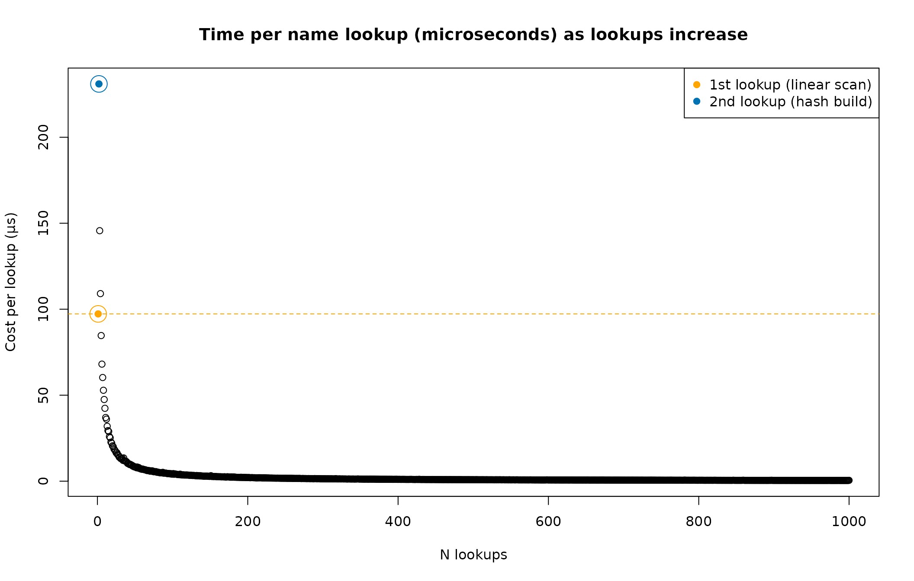
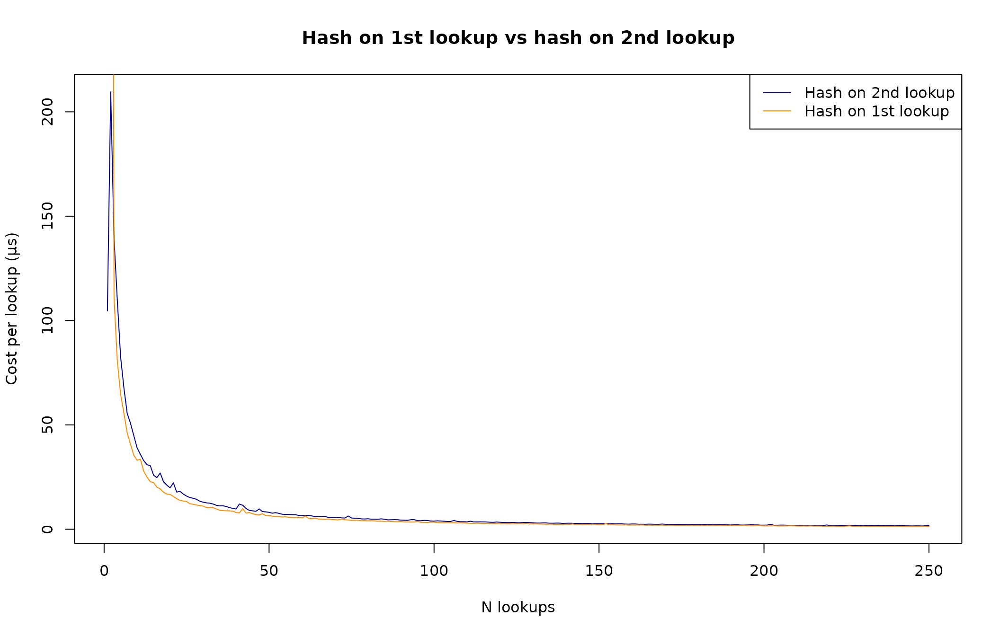
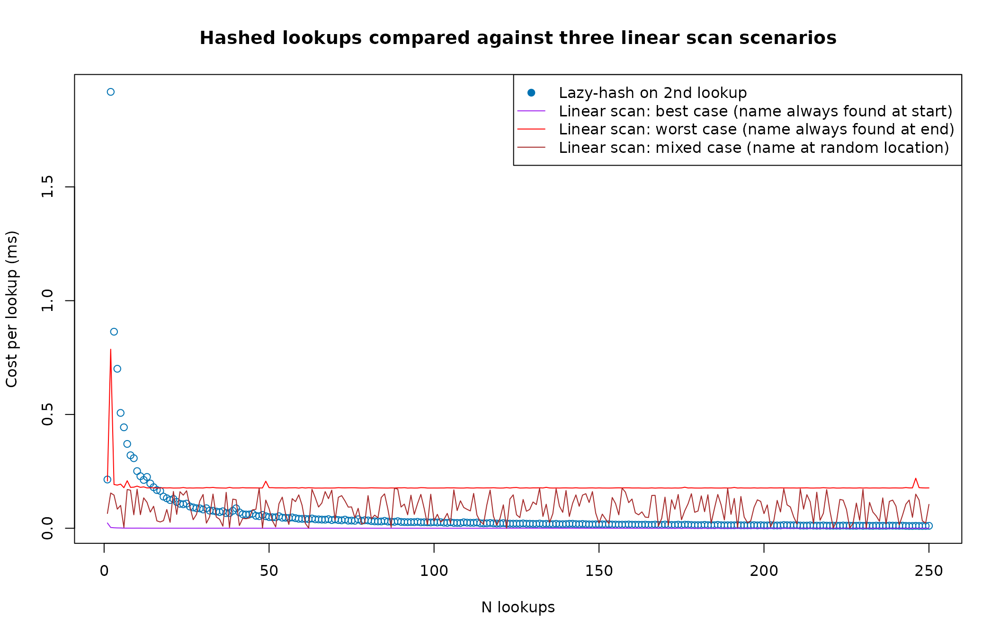

To speed up named-indexing, cppally implements hashing of vector names via a lazy cache-on-lookup approach. To better understand how this works, we will show what name-indexing in R looks like, how to improve it with hashing, as well as the benefits and limitations of cppally’s inherent lazy-hashing method.
Let’s first load cppally
Indexing into a vector by name is a useful idiom
# Name-value list
x <- list(
a = 10,
b = 20,
c = 30
)
x[["c"]] # Index-by-name
#> [1] 30
x[[3]] # Index-by-location
#> [1] 30It signifies to those reading the code the exact key we want. Compared to indexing by location, it is resilient to keys changing location.
# If we insert an element between 2 and 3, x[[3]] changes
x <- c(
x[1:2],
list(d = 40), # New element
x[3]
)
x[[3]] # Now 40
#> [1] 40
x[["c"]] # Still the same value
#> [1] 30Performance of indexing by location versus name
For this we need a large name-value list
Lookup by location is O(1) and very fast in R, regardless of the index
library(bench)
mark(large[[1]])
#> # A tibble: 1 × 6
#> expression min median `itr/sec` mem_alloc `gc/sec`
#> <bch:expr> <bch:tm> <bch:tm> <dbl> <bch:byt> <dbl>
#> 1 large[[1]] 100ns 130ns 6878116. 0B 0
mark(large[[length(large)]])
#> # A tibble: 1 × 6
#> expression min median `itr/sec` mem_alloc `gc/sec`
#> <bch:expr> <bch:tm> <bch:tm> <dbl> <bch:byt> <dbl>
#> 1 large[[length(large)]] 200ns 230ns 4014814. 0B 0Since R scans the names each time, lookup by name is O(n) and can be slow if names happen to be near the end of the vector
mark(
by_name = large[["name_1"]],
by_index = large[[1]]
)
#> # A tibble: 2 × 6
#> expression min median `itr/sec` mem_alloc `gc/sec`
#> <bch:expr> <bch:tm> <bch:tm> <dbl> <bch:byt> <dbl>
#> 1 by_name 120ns 151ns 5806868. 0B 0
#> 2 by_index 110ns 130ns 6830063. 0B 0
mark(
by_name = large[["name_100000"]],
by_index = large[[100000]]
)
#> # A tibble: 2 × 6
#> expression min median `itr/sec` mem_alloc `gc/sec`
#> <bch:expr> <bch:tm> <bch:tm> <dbl> <bch:byt> <dbl>
#> 1 by_name 554µs 566µs 1768. 0B 0
#> 2 by_index 100ns 131ns 6657473. 0B 0If we created a hash table of names-values, we could speedup repeated lookups
names_hashtab <- hashtab(size = length(large))
for (i in seq_along(names(large))){
nm <- names(large)[[i]]
sethash(names_hashtab, nm, large[[i]])
}
# Confirm it worked
identical(gethash(names_hashtab, "name_10"), large[["name_10"]])
#> [1] TRUELet’s now compare all three methods: lookup by location, name and hashed name
mark(
by_name = large[["name_100000"]],
by_index = large[[100000]],
by_hashed_name = gethash(names_hashtab, "name_100000")
)
#> # A tibble: 3 × 6
#> expression min median `itr/sec` mem_alloc `gc/sec`
#> <bch:expr> <bch:tm> <bch:tm> <dbl> <bch:byt> <dbl>
#> 1 by_name 555µs 568µs 1762. 0B 0
#> 2 by_index 110ns 130ns 6433507. 0B 0
#> 3 by_hashed_name 861ns 932ns 722141. 0B 0That worked! Extracting the value associated with the last name using the hash table was almost as fast as looking it up by location.
cppally uses this same approach internally, attaching a lazy hash map
cache to each r_vector.
Due to R/C++ limitations, the cache cannot survive the R/C++ boundary
as we cannot easily attach the cache to the returned SEXP.
Therefore instead of a cache-on-1st-lookup approach, which would be most
efficient, we implement a cache-on-2nd-lookup approach. This brings
certain limitations when writing R functions that use cppally code.
To understand the limitation, it is first crucial to understand how
cppally registers C++ functions to R. R can only handle
SEXP objects, a generic type that represents any R
object.
cppally automatically handles all conversions between cppally classes
like r_vector and R’s SEXP. To illustrate
this, suppose we have the identity function foo() that
accepts an integer vector x and returns the same vector
unchanged.
The function is then registered to R (via
cppally::load_all()) and the following R and C++ code is
automatically generated.
Generated R code
foo
function(x) {
.Call(`_cppally_foo`, x)
}Generated C++ code
r_vector<r_int> foo(r_vector<r_int> x);
extern "C" SEXP _cppally_foo(SEXP x) {
BEGIN_CPPALLY
return cpp_to_sexp(::foo(as<r_vector<r_int>>(x)));
END_CPPALLY
}Looking at the generated R function foo(), we see
.Call() is called and is passed the input x.
.Call() is the R interface that allows us to pass R objects
to C++.
Looking at the generated C++ function -
BEGIN_CPPALLY/END_CPPALLY are helpers that run the main
code in try/catch blocks to catch any C++ errors and promote them to R
errors. In theory, all R errors thrown by cppally are done via
R_UnwindProtect which safely runs all C++ destructors on
error.
Looking at the innermost function, we can see the expression
as<r_vector<r_int>>(x) - this converts the
input SEXP from R into a fresh cppally integer vector. The
C++ function foo() is then called with that vector, which
is then passed to cpp_to_sexp() - a function that converts
C/C++ objects back to SEXP.
The conversions look like this:
SEXP (R)
↓
r_vector<r_int> (C++)
↓
r_vector<r_int> (C++, via foo())
↓
SEXP (R)This round-trip from SEXP to
r_vector<r_int> and back to SEXP happens
every single time foo() is called (which happens via
.Call()). Because r_vector is the class that
builds and stores the cache, that cache is lost when converting to
SEXP and therefore, the hashing approach becomes
difficult.
To mitigate the negative performance impacts of this limitation, we implement a hash-on-2nd-lookup approach. This means the first lookup is a linear scan, the second lookup triggers the hash map build before doing a hash lookup. All lookups from the 2nd onwards use the hash map.
Practically speaking this shouldn’t negatively impact performance when doing lookups from R as one would have to write a function that performs exactly two lookups on each call to experience the highest cost penalty, something that while not impossible, is likely uncommon.
In C++, the cache persists across calls since there is no
SEXP round-trip. The first lookup is a linear scan, the
second builds the hash map, and all subsequent lookups are O(1).
r_int a = x.get("a"); // linear scan
r_int b = x.get("b"); // hash map built + O(1) lookup
r_int c = x.get("c"); // O(1) lookupLet’s illustrate this by visualising the per call cost as the number of lookups increases, comparing R and cppally.
cpp_source(code = '
#include <cppally.hpp>
using namespace cppally;
[[cppally::register]]
r_vec<r_sexp> do_lookup(r_vec<r_sexp> x, r_str name, int n_iterations){
r_vec<r_sexp> out(n_iterations);
for (int i = 0; i < n_iterations; ++i){
out.set(i, x.get(name));
}
return out;
}
')R equivalent using [[
The cost of first lookup
Here we are simply comparing the cost of doing a 1st-lookup, in both R and C++
nm <- names(large)[length(large)]
mark(
cppally_one_lookup = do_lookup(large, nm, 1),
base_one_lookup = r_do_lookup(large, nm, 1)
)
#> # A tibble: 2 × 6
#> expression min median `itr/sec` mem_alloc `gc/sec`
#> <bch:expr> <bch:tm> <bch:tm> <dbl> <bch:byt> <dbl>
#> 1 cppally_one_lookup 72.2µs 72.8µs 13193. 0B 0
#> 2 base_one_lookup 558.1µs 572.1µs 1744. 21.6KB 0While I’m not sure why cppally’s linear scan is faster than R’s, it
may be due to the fact that direct data access is used to compare
elements instead of STRING_ELT()
The cost of many lookups
We will now plot the per-call cost of doing many repeated lookups to see how many lookups we need to do before we start seeing the benefits of hashing

The plot shows an interesting story - the first lookup (linear scan) sets a baseline cost. The second lookup pays the cost of the hash map build, making it the most expensive per-lookup. From there, each additional lookup amortises the one-time hash build cost over more calls, so the average drops and stabilises well below the first-lookup baseline.
Let’s see how this compares to a pseudo hash-on-1st lookup method. To achieve this we will set the first lookup to be a fast linear scan of the first name which means the rest of real lookups use hashing.
cpp_source(code = '
#include <cppally.hpp>
using namespace cppally;
[[cppally::register]]
r_vec<r_sexp> do_first_lookup_hashed(r_vec<r_sexp> x, r_str name, int n_iterations){
r_vec<r_sexp> out(n_iterations);
// Initial lookup as fast linear scan to force all other lookups to be hashed
static_cast<void>(x.get(x.names().get(0)));
for (int i = 0; i < n_iterations; ++i){
out.set(i, x.get(name));
}
return out;
}
')
The two lines are overlapping after a few lookups, signifying that there is little penalty to waiting until the 2nd lookup to build the hash map.
Let’s also plot some comparisons comparing repeated hash lookups against repeated linear scan lookups. At the same time we will also use a larger list.
large <- as.list(sample.int(5e05))
names(large) <- paste0("name_", seq_along(large))
cpp_source(code = '
#include <cppally.hpp>
using namespace cppally;
[[cppally::register]]
r_vec<r_sexp> do_linear_lookup(r_vec<r_sexp> x, r_str name, int n_iterations){
r_vec<r_sexp> out(n_iterations);
r_vec<r_str> names = as<r_vec<r_str>>(x.names());
int n = names.length();
auto *p = names.data(); // Use ptr to allow O2 optimisations here for fair comparison
for (int i = 0; i < n_iterations; ++i){
for (int j = 0; j < n; ++j){
if (unwrap(name) == p[j]){
out.set(i, x.view(j));
break;
}
}
}
return out;
}
')
The best and worst case linear scans are presented for illustrative purposes even though they are not realistic with real data. The most informative comparison is between the trend of the hash lookup cost versus the linear scan (mixed case). We can see that for the first few lookups the linear scan dominates (as expected), but as the number of lookups increases, the hash approach begins to outperform the linear scan (mixed case) and stabilises well below it.
In summary, cppally’s lazy hashing trades a one-time hash build cost for fast repeated lookups. The approach works best in C++, where the cache persists across calls. From R, each call starts fresh, so the benefit is limited to functions that perform multiple lookups within a single call.
Future development
While not explored in this vignette, it is possible to preserve the
cache across the R/C++ boundary. By attaching an
externalptr to the names_map as an attribute
of a custom R vector class, the cache lifetime is tied to the lifetime
of the R object (provided that externalptr is kept as an
attribute). This may require cppally support for injecting a pre-built
cache into a fresh r_vector wrapper, but is otherwise a
tractable extension.